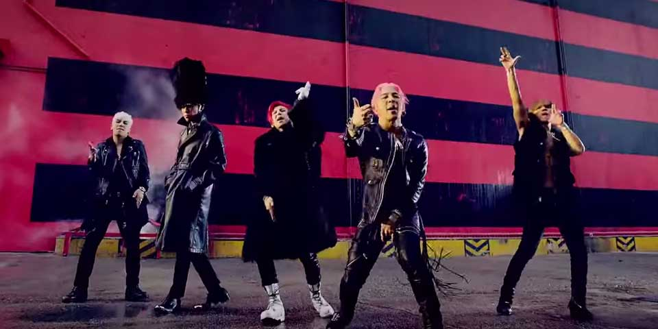
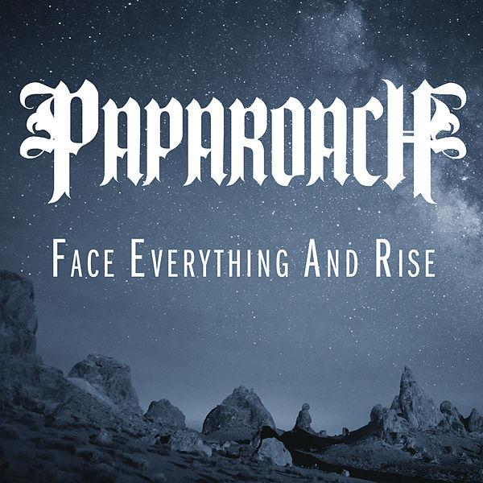
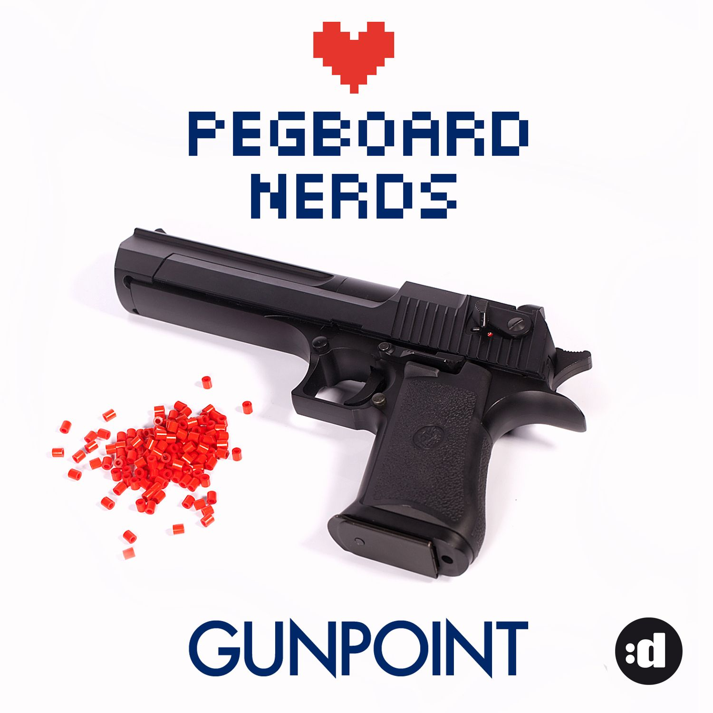
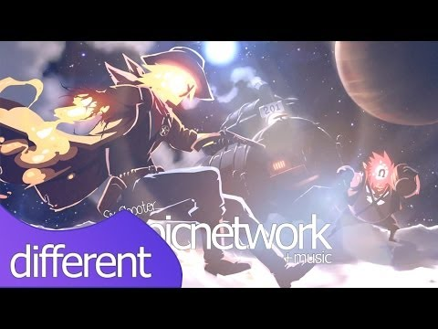

Esse site é feito com o intuito de testar minhas(Izaque/Isaac) Habilidades em HTML, e tambem mostrar histórias minhas, sobre mim, e minha identidade(stake2) na internet.
This site is made to test my(Izaque/Isaac) skills in HTML, and also to show my stories, about me, and my identity(stake2) on the internet.
Esse é o tutorial do site.
Você pode clicar nos botões acima para abrir abas como imagens, musicas, videos, historias.
Você pode clicar no "X" para fechar as abas.
O Texto "Novo!" significa que eu(Izaque) adicionei uma nova coisa naquela aba.
This is the tutorial of the site.
You can click on the buttons above to open tabs like images, songs, videos, stories.
You can click on the "X" to close the tabs.
The "New!" text means that i(Isaac) added something new to that tab.
English(inglês) / Português Brasileiro(Brazilian Portuguese)
20:51 27/10/2017: Updated "Sobre mim(About me)" tab / 20:51 27/10/2017: Atualizado a aba "Sobre mim(About me)"
23:19 03/11/2017: Added "X" button to close tabs / 23:19 03/11/2017: Adicionado botão "X" pra fechar abas
14:47 04/12/2017: Removed Diário's Birthday Pic / 14:47 04/12/2017: Removido foto do aniversário do Diário
03:06 10/12/2017: Modified bar links / 03:06 10/12/2017: Modificado os links da barra
03:55 10/12/2017: Added Tutorial to the site on the front tab / 03:55 10/12/2017: Adicionado tutorial para o site na aba frontal
This will be my personal Wikia, for those who don't know me my name in the internet is Stake2 and outside the internet it's Izaque Sanvezzo,
I'm actually 15 years old, i identify myself as a person of male sex, and my sexual orientation is bissexual.
I'm a person that likes to do things alone, i don't like to be surrounded by people and to be the center of attention...
and i don't like normal things too much, like... i like different things, of the undergroud culture,
when it comes to music i prefere instrumental and not so famous songs, i don't get "connected" in the tendencies because i don't like tendencies.
"The Snakes" was a nickname that i tried to use but i didn't liked, but since that i picked up on a computer for the first time i use the nickname stake2.
Essa vai ser uma Wikia pessoal Minha, pra quem não me conhece meu nome na internet é Stake2 e fora da internet é Izaque Sanvezzo,
tenho atualmente 15 anos, me identifico como pessoa do sexo masculino, e minha orientação sexual é bissexual.
Sou uma pessoa que gosta de fazer as coisas sozinho, não gosto de ficar rodeado de pessoas e ser o centro das atenções...
e eu não gosto de coisas muito normais assim, tipo eu gosto de coisas diferentes, da cultura underground,
se for musica eu prefiro instrumental e musicas não tão famosas, não fico "ligado" nas modinhas novas porque não gosto de modinha.
"The Snakes" era um nickname que tentei usar mas não gostei, mas desde que eu peguei pela primeira vez num pc eu uso o nome stake2.
11 Musicas Famosas
BIGBANG - FANTASTIC BABY
BIGBANG - 뱅뱅뱅 (BANG BANG BANG)

Papa Roach-Face Everything and Rise with lyrics

Pegboard Nerds - Gunpoint

Best Gaming Music Mix 2017 | Dubstep, Trap, Drumstep, Electro
Akon - Oh Africa
Akon - Beautiful ft. Colby O'Donis, Kardinal Offishall
Coyote Kisses - Six Shooter

Blue October - Jump-Rope Pretty-Monkey
Riot Ten & Sullivan King - Body Bag
SR71 - Let it Whip
SR71 - Right Now
Loading Data...
Littletato is a potato that like to do alot of things, like to trip, to do sports, and this is her story...
Intro
Littletato was a potato that lived alone, she was always tripping and walking through cities, and loved to live and to see new things, one day she found another potato, and then they talked alot...
Chapter 1
They started to knew each other a little more, That other potato was called Julia and was of pink color, they planned a whole life... they planned what city they would go, what house and a lot of other things, and they traveled to that city that they dreamed of, the city was San Francisco, they bought a house and lived there, once in a while Littletato came out to the shop to buy things, but she didn't bought tatos(potatoes) because that was cannibalism and she thought that this thing that humans made is bad, to put living things there, San Francisco was a city where vegetables and fruits could live safe without humans close, but still vegetables and fruits were sold, other people bought fruits and vegetables to eat, but Littletato thought that that was gross, she only bought meat and milk, and some grains like rice and beans, then Littletato found a friend of her while walking home, the friend was a sweet potato called Yam, Yam was of masculine sex, Yam and Littletato talked a lot, Yam said that in Las Vegas they sold meat and vegetables even if there was Cows in there and they continued to talk, then Littletato finished the conversation and started walking to home again...
Chapter 2
Then Littletato came back to her home, and talked to Julia about the conversation she had with Yam, then she placed the food she bought from shop in the table, she helped Julia prepare the dinner, they made the dinner and ate it, then slept, in the other day Littletato woke up but Julia didn't wake up, Littletato got out of bed and started to make breakfast and drank milk with chocolate and ate some breads with butter, then she came to the room where her and Julia slept, she thought that Julia was so cute sleeping that she didn't woke up her, Littletato had a computer in her house, it was in the living room and was where she had all the information about the world, she then came to the computer and turned it on, she logged in her facebook account and she saw all her friends, even if this friends were just on the internet, she thought that was awesome to have friends, then she became to roll on the page, her friends always posted some news, and one news interested her, it was a news about how New York citizens were trying to fight the fruits and wanting freedom, the news said that fruits was invading New York and the vegetables didn't liked that, Littletato thought that San Francisco was good because of that, the city of San Francisco was stabilized, no fight between the citizens, and then Littletato closed the page and came back to rolling her facebook timeline, then Yam, her old friend called her on the chat, he said that in New York they had good jobs, but then Littletato answered that she already had a home in San Francisco and didn't need to work, then Yam asked how, then she replied that she had a girlfriend in San Francisco, and then Yam said that he forgot that and said that he had to do somethings, Littletato replied the same, they finished the conversation and Littletato signed out of her facebook account, and came out of the house to relax a little, then came back again and closed the door, Julia called her and Littletato came to her room to see what Julia was needing, Julia said that was nothing with a smile of her face, then said that she loved Littletato, Littletato said the same, then Littletato came back to bed to sleep a bit more, she looked on clock and was six am, then Littletato hugged Julia by her back and they slept together...
Chapter 3
Then the clock ringed, Littletato woke up and saw the hours, it was eleven in the morning, she got out of bed to make coffee, and made coffee, she poured coffee in her squared mug, and poured in other mug at the other side of the table to Julia, and she placed butter in her bread and in Julia's, then she came to her bed to wake up Julia, Littletato gave a kiss in the cheek of Julia and said wake up to her, Julia slowly opened her eyes and looked at Littletato with a smile on her face, then Julia hugged Littletato, Littetato smiled and called Julia to eat breakfast, they came to the kitchen and ate while talking about somethings, then Julia said that she was going to call her sister to visit her house, and Littletato said she wish to met Julia's sister, then Julia smiled, Littletato said that she was going to work, Julia smiled and said ok, Littletato carried up the things she needed for the job, and said goodbye to Julia then got out the house and started walking to her job, then she arrived at work, and then started to work, it was a technology company that made smartphones and apps for smartphones, Littletato before leaving the house said that she would arrive home at six, Julia then said that her sister would arrive at six and a half, while Littletato was working Julia was preparing the house to her sister visit, her sister was called Patricia, she had nineteen years old and Julia had eighteen, time passed, Littletato was walking back to home, then she noticed some televisions on a shop window, she heard that a war was happening in Las Vegas, and that vegetables were fighting against some animals, Littletato by seeing that became a little sad, she picked up her phone and looked on the photos, there was a photo of her and Julia hugged together, she smiled and became a little happier, she looked at the hour and saw it was almost six and a half, she turned off the phone and started running to her house, then she finally arrived at home, and Patricia was there, Littletato said hello to Patricia and Patricia said hello back, Julia presented Littletato to Patricia, Patricia to Littletato...
Chapter 4
Patricia said hello to Littletato, and Littletato said hello back, Julia said to them to come eat afternoon coffee, they eat and talked about a lot of things, Patricia said that the city she live had great jobs, they talked a little and Patricia said goodbye to Littletato and Julia, and Julia said she was happy to see her sister again, Littletato thought that was good, and she was happy for Julia, Julia and Littletato came inside the house after saying goodbye to Patricia, and they saw the hours, it was eleven of night, they locked the house and came to the room to sleep, they slept, Littletato woke up and got off bed, she made the morning needs in the bathroom then came to the kitchen to prepare breakfast, she made some breads with butter, and some coffee with milk, then came to wake up Julia, she woke up Julia and they came to eat breakfast, Julia said that in the start when they both moved to San Francisco she thought that was hard to start on a new and big city, but now she is confident, Littletato said she was confident too, they got off the table and Littletato gathered the things for job, she said goodbye to Julia and Julia said goodbye back...
((( Author's note: i writed this while listening to this mix https://www.youtube.com/watch?v=hKYyN1aDfCQ )))
Chapter 5
Then Littletato was in her job and was thinking about life, she thought she really loved her life, and she thought that was cool to live that life, then she got back to work, she was fixing some code errors, she worked as a debugger but also gave ideas to her boss, she liked that job, and she liked to live in that city, some hours passed and was in the hour of lunch, Littletato brought some packed lunch, it was rice with beans, she ate and came back to work, she thought that the lunch was good, she continued fixing bugs in the code, then some time passed, it was time to go home, she then came to her house, and Julia greeted her, then Littletato came inside the house, she looked at the hours and was six hours of night, she said she was hungry, Julia said she already prepared the dinner, then they locked the house and Littletato and Julia came to the kitchen and ate the dinner, Littletato said the food was delicious, Julia smiled and said thanks, Littletato said she liked some calm and chill music, Julia said she liked too, then they cleaned the table, and Littletato helped Julia with the dishes, then they came to the bedroom and slept, Littletato before falling asleep thought that she was happy, really happy...
Chapter 6
Littletato then woke up, she looked at the clock and saw that was six at the morning, she then looked at the calendar and realized that was saturday, then she slept again, she woke up at eleven in the morning, and then she woke up Julia, Julia and Littletato came to the kitchen to make coffee, they made coffee and breads with butter, and then ate it, Julia said that they could hang out a little, Littletato said that was a good idea, they left the house and locked it, Julia said that she knew a park close to the house, they got there and sat a little and then talked, then they walked to the marketplace to buy food, Littletato bought bread, rice and beans, and some coke, they got home and Julia prepared the lunch, Littletato helped her, they ate and got a little tired, they slept, Littletato woke up first and looked at the hours, it was six at night, Littletato made the dinner and called Julia, they ate and Littletato invited Julia to watch a movie, they had Vegeflix in the tv, they watched while drinking the rest of coke and then slept...
Chapter 7
It was a sunday, Littletato just wanted to sleep the whole day, because that's what people do on sunday, she was awake, Littletato looked at the clock and it was seven in the morning, then she hugged Julia that was in the bed sleeping, then she slept with Julia, she and Julia woke up at the same time, they were rested, and just wanted to have fun, they had a tv and a video game in the living room, they played a lot of games together, and had a lot of fun, Littletato was happy that day, really happy, she had a video game called Vegebox, the video game had a Vegebox Live where you could do a lot of things in the internet, just like a computer, Littletato played a song in the music app called Vegetify, it was some folk music, she liked that chill style music, she and Julia played racing games, first-person-shooter games, they liked that kind of games, Julia said she was happy playing with Littletato, Littetato looked in the clock and it was seven at night, they were hungry, they paused the game called Vegetablefall 2, the sequel had a story and not just a multiplayer, Julia came to the kitchen and made the dinner with help of Littletato, they ate the dinner and then played a little more of Vegetablefall 2, then they slept, before sleeping Littletato said to Julia that she had fun today, and that she want more days like this...
Pequenata era uma batata que vivia sozinha, ela estava sempre viajando e andando pelas cidades, e amava viver e ver novas coisas, um dia ela encontrou outra batata, e eles conversaram um monte...
Capitulo 1
Eles começaram a se conhecer um pouco mais, A outra batata se chamava Julia e era rosa, eles planejaram uma vida inteira... eles planejaram que cidade que eles iriam, que casa e muitas outras coisas, e eles viajaram para aquela cidade que eles sonhavam, a cidade era São Francisco, eles compraram uma casa e viveram la, de vez em quando Pequenata ia ao supermercado pra comprar coisas, mas ela não comprava tatas(batatas), porque isso era canibalismo e ela pensou que essa coisa que os humanos fizeram é ruim, colocar coisas vivas la, São Francisco era uma cidade onde vegetais e frutas poderiam viver seguras sem humanos por perto, mas ainda assim vegetais e frutas eram vendidos la, outras pessoas compraram frutas e vegetais pra comer, mas Pequenata achou que isso era nojento, ela comprou só leite, e alguns grãos como arroz e feijão, e então Pequenata encontrou um amigo dela enquanto voltava pra casa, o amigo era uma batata doce chamada Yam, Yam era de sexo masculino, Yam e Pequenata conversaram um monte, Yam disse que em Las vegas eles vendiam carne e vegetais mesmo que havia vacas la e eles continuaram a conversar, então Pequenata terminou a conversa e voltou a andar até em casa...
Capitulo 2
E então Pequenata voltou pra casa, e conversou com Julia sobre a conversa que teve com o Yam, e então ela colocou a comida que comprou na mesa, ela ajudou Julia a fazer a janta, eles fizeram o jantar e comeram, e então dormiram, no outro dia Pequenata acordou mas Julia não, Pequenata saiu da cama e começou a fazer o café da manha e bebeu leite com chocolate e comeu alguns pães com manteiga, e então ela foi para o quarto onde Julia e ela dormiam, ela achou que Julia estava tão fofa dormindo que ela não a acordou, Pequenata tinha um computador na casa dela, ele estava na sala de estar e era la que ela tinha toda a informação sobre o mundo, e então ela foi para o computador e ligou ele, ela entrou no facebook e viu todos os amigos dela, mesmo que esses amigos sejam só na internet, ela pensou que era incrível ter amigos, e então ela começou a descer a pagina, os amigos dela sempre postavam noticias, e uma noticia interessou ela, era sobre como os cidadãos de Nova York estavam tentando lutar contra as frutas e querendo liberdade, a noticia falava que as frutas estavam invadindo Nova York e os vegetais não gostaram disso, Pequenata pensou que São Francisco era boa por causa disso, a cidade de São Francisco era estabilizada, sem luta entre os cidadãos, e então Pequenata fechou a pagina e voltou a descer a timeline do facebook, e então Yam, o velho amigo dela chamou ela no bate-papo, ele falou que em Nova York tinha bons trabalhos, mas então Pequenata disse que ela ja tinha uma casa em São Francisco e não precisava trabalhar, e então Yam perguntou como, e então ela respondeu que tinha uma namorada em São Francisco, e então Yam disse que se esqueceu disso e disse que precisava fazer algumas coisas, Pequenata disse o mesmo, eles terminaram a conversa e Pequenata saiu do facebook, e saiu pra fora pra relaxar um pouco, e então voltou pra dentro e fechou a porta, Julia chamou ela e Pequenata foi para o quarto dela pra ver o que Julia precisava, Julia com um sorriso no rosto disse que não era nada, e então disse que amava Pequenata, Pequenata disse o mesmo, e então Pequenata voltou pra cama pra dormir um pouco mais, ela olhou no relogio e era seis horas da manhã, e então Pequenata abraçou Julia por trás e eles dormiram juntos...
Capítulo 3
E então o relogio tocou, Pequenata acordou e olhou as horas, era onze da manhã, ela saiu da cama pra fazer café, e fez café, ela colocou café na caneca quadrada dela, e colocou em outra caneca no outro lado da mesa para Julia, e passou manteiga no pão dela e no da Julia, e então ela foi pra cama dela pra acordar Julia, Pequenata deu um beijo na bocheca de Julia e acorda pra ela, Julia abriu os olhos lentamente e olhou para Pequenata com um sorriso em seu rosto, e então Julia abraçou Littletato, Pequenata sorriu e chamou Julia pra tomar café, eles vieram para a cozinha e comeram enquanto conversavam sobre coisas, e então Julia disse que ela ia chamar a irmã dela pra visitar a casa, e Pequenata disse que queria conhecer a irmã de Julia, e então Julia sorriu, Pequenata disse que ia trabalhar, Julia sorriu e disse ok, Pequenata pegou as coisas que precisava pra trabalhar, e disse ate mais para Julia e então saiu da casa e começou a andar para o trabalho dela, e então ela chegou no trabalho, e começou a trabalhar, era uma empresa de technologia que fazia celulares e aplicativos para celulares, Pequenata antes de sair de casa disse que voltaria as seis, Julia então falou que a irmã dela chegaria seis e meia, enquanto Pequenata estava trabalhando Julia estava preparando a casa para a visita da irmã dela, a irmã dela se chamava Patricia, ela tinha dezenove anos e Julia tinha dezoito , horas se passarãm, Pequenata estava voltando pra casa, e então ela viu algumas televisões em uma vitrine de loja, ela ouviu que uma guerra estava acontecendo em Las Vegas, e que os vegetais estavam lutando contra alguns animais, Pequenata por ver isso ficou um pouco triste, ela pegou o celular e olhou para as fotos, tinha uma foto dela e de JUlia abraçadas, ela sorriu e ficou um pouco feliz, ela olhou as horas e viu que era quase seis e meia, ela bloqueou o celular e começou a correr para a casa dela, e então finalmente chegou em casa, e Patricia estava la, Pequenata falou ola para Patricia e Patricia disse ola de volta, Julia apresentou Pequenata para Patricia, Patricia para Littletato...
Capitulo 4
Patricia disse olá para Pequenata, e Pequenata disse olá de volta, Julia disse para eles virem tomar café da tarde, eles comeram e conversaram sobre muitas coisas, Patricia disse que na cidade que ela mora tinha trabalhos bons, eles conversaram um pouco e Patricia disse tchau para Pequenata e Julia, e Julia disse que estava feliz de ver a irmã dela de novo, Pequenata pensou que isso era bom, e ela estava feliz por Julia, Julia e Pequenata entraram em casa depois de dizer tchau para Patricia, e eles olharam as horas, era onze da noite, eles trancaram a casa e foram para o quarto dormir, eles dormiram, Pequenata acordou e saiu da cama, ela fez as necessidades da manhã no banheiro e então foi para a cozinha fazer o café da manhã, ela fez uns pães com manteiga, e um pouco de café com leite, e então veio acordar Julia, ela acordou Julia e eles foram tomar café da manha, Julia disse que no começo quando eles vieram pra São Francisco ela pensou que era dificil começar em uma cidade nova e grande, mas agora ela está confiante, Pequenata disse que estava confiante tambem, eles sairam da mesa e Pequenata pegou as coisas para o trabalho, ela disse tchau para Julia e Julia falou tchau de volta...
((( Nota do autor: eu escrevi isso enquanto ouvia esse mix: https://www.youtube.com/watch?v=hKYyN1aDfCQ )))
Capitulo 5
Então Pequenata estava no trabalho dela e estava pensando sobre a vida, ela pensou que realmente amava a vida dela, e ela pensou que era legal viver essa vida, então ela voltou ao trabalho, ela estava consertando alguns erros de código, ela trabalhava como debugger mas tambem dava ideias para a chefe dela, ela gostava desse trabalho, e ela gostava de viver naquela cidade, algumas horas se passaram e estáva na hora do almoço, Pequenata trouxe uma marmita, era arroz com feijão, ela comeu e voltou ao trabalho, ela pensou que o almoço estava bom, ela continuou consertando os erros no código, e então algum tempo se passou, era hora de ir pra casa, então ela voltou pra casa, e Julia comprimentou ela, então Pequenata entrou na casa, ela olhou para as horas e era seis horas da noite, ela falou que tava com fome, Julia disse que ja preparou o jantar, então eles trancaram a casa e Pequenata e Julia foram para a cozinha e comeram o jantar, Pequenata disse que a janta estáva deliciosa, Julia sorriu e disse obrigado, Pequenata disse que ela gostava de musica calma e relaxante, Julia disse que gostava tambem, então eles limparam a mesa, e Pequenata ajudou Julia com os pratos, então elas foram para o quarto e dormiram, Pequenata antes de dormir pensou que ela estava feliz, muito feliz...
Capitulo 6
Pequenata acordou, ela olhou para o relógio e viu que era seis hóras da manhã, ela olhou para o calendário e percebeu que era sábado, então dormiu novamente, ela acordou onze da manhã, e então acordou Julia, Julia e Pequenata foram para a cozinha para fazer café, elas fizeram café e pão com manteiga, e então comeram, Julia disse que elas podiam sair um pouco, Pequenata disse que era uma boa ideia, elas sairam da casa e fecharam ela, Julia disse que conhecia um parque perto da casa, elas foram lá e sentaram um pouco e então conversaram, então andaram para o mercado para comprar comida, Pequenata comprou pão, arroz e feijão, e um pouco de coca-cola, elas voltaram para casa e Julia preparou o almoço, Pequenata a ajudou, elas comeram e ficaram um pouco cansadas, elas dormiram, Pequenata acordou antes e olhou as hóras, era seis da noite, Pequenata fez a janta e chamou Julia, elas comeram e Pequenata convidou Julia para assistir um filme, elas tinham Vegeflix na tv, elas assistiram enquanto bebiam o resto da coca-cola, e então dormiram...
Capitulo 7
Era domingo, Pequenata só queria dormir o dia todo, por que é isso que que ás pessoas fazem no domingo, ela estáva acordada, Pequenata olhou para o relógio e era sete da manhã, e então ela abraçou Julia que estáva na cama dormindo, e então ela dormiu com Julia, ela e Julia acordaram ao mesmo tempo, elas estavam descansadas, e só queriar se divertir, elas tihnam uma tv e um video game na sala, elas jogaram muitos jogos juntas, e se divertiram bastante, Pequenata estava feliz naquele dia, muito feliz, ela tinha um video game chamado Vegetalbox, o video game tinha uma Vegetalbox Live onde você podia fazer um monte de coisas na internet, igual um computador, Pequenata tocou uma musica no aplicativo de música chamado Vegetify, era música folk, ela gostava desse estilo calmo de música, ela e Julia jogaram jogos de corrida, jogos de tiro em primeira pessoa, elas gostavam de jogos desse tipo, Julia disse que ela estava feliz por jogar com Pequenata, Pequenata olhou no relógio e era sete da noite, elas estavam com fome, elas pausaram o jogo chamado Vegetablefall 2, a sequência tinha uma história e não só o multiplayer, Julia veio a cozinha e fez o jantar com a ajuda de Pequenata, elas comeram o jantar e então jogaram um pouco mais de Vegetablefall 2, e então dormiram, antes de dormir Pequenata falou para Julia que ela se divertiu hoje, e que ela queria mais dias assim...